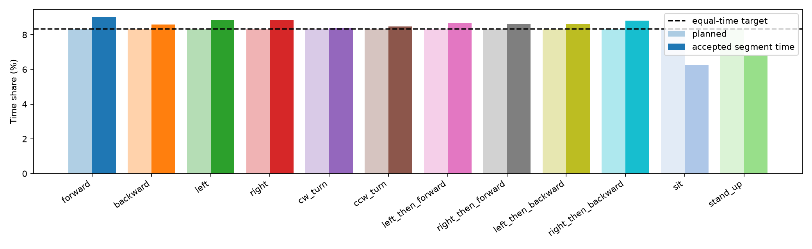
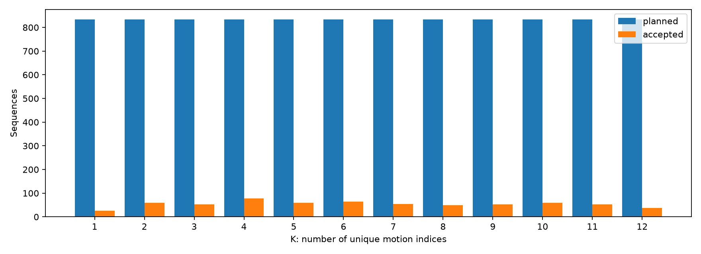
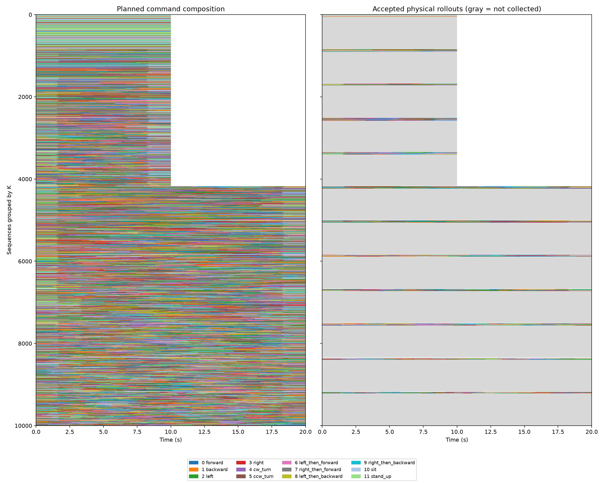

목표 10,000 · 실제 통과 645 · 시도 752 · 실패 90 · 근접 중복 제외 17
계획과 실제 수집을 분리했다. accepted 비중은 실제 수행 검사를 통과한 모션의 구간 라벨 시간이며 전환 시간을 포함한다. 프레임별 동작 인식 결과는 아니다. K<6은 10초, K≥6은 20초다. 회색은 미수집, 흰색은 10초 모션 종료 뒤의 영역이다. 시간 지도는 전체를 축소 표시하며 원래 가변 길이 라벨은 timeline_labels.npz에 저장했다.



유효 동작은 1초 전 대비 월드 XY 위치 3cm 이상, 바라보는 각도 5도 이상, 몸통 높이 2cm 이상 중 하나의 실제 변화를 요구한다. 이동·회전 구간은 비교 시점의 50% 이상이 활동 상태이고 연속 정지는 1.5초 이하여야 한다. 앉기·일어나기도 같은 시간 변화 검사를 적용한다.
앉기는 CALM LLC latent, 일어나기는 CALM HLC의 정지·수직 자세 목표를 사용한다. 고정 stand-up latent가 앉은 자세에 머물러 대체 경로를 실제 시험했다. 목표 속도 랜덤화는 이동/회전에 적용하며 자세 전환 속도를 직접 제어한다고 주장하지 않는다. 자기 충돌은 끄고 바닥 충돌을 유지한다. 통과 판정은 방향·회전·높이 변화의 선별 기준이며 정밀 추종이나 TT 재현성의 보증은 아니다.